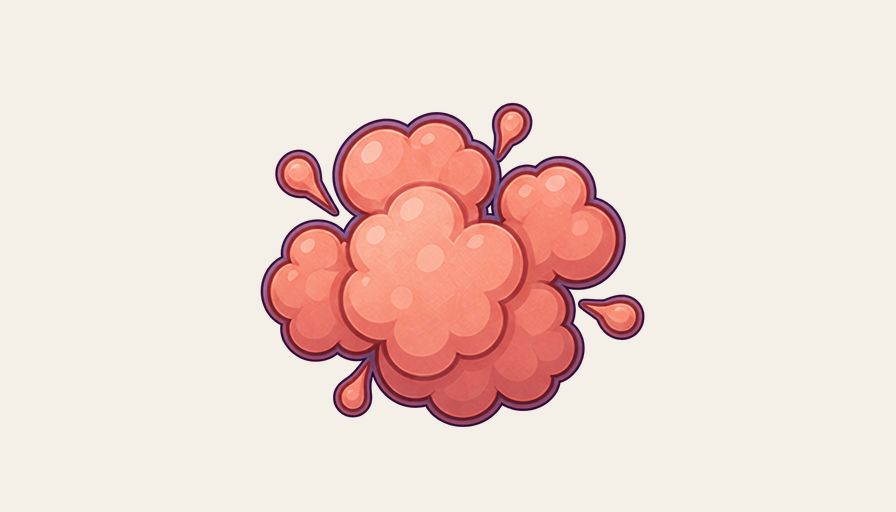
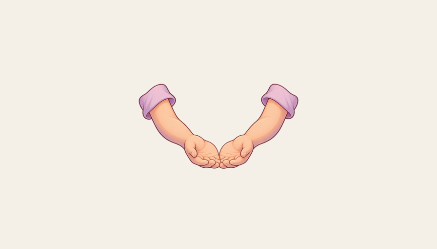
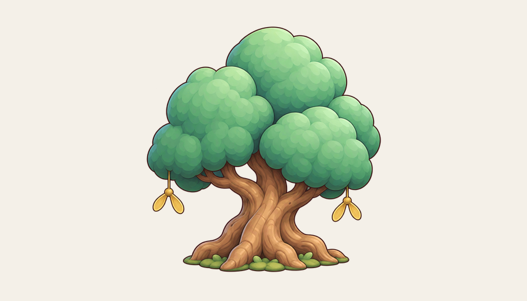
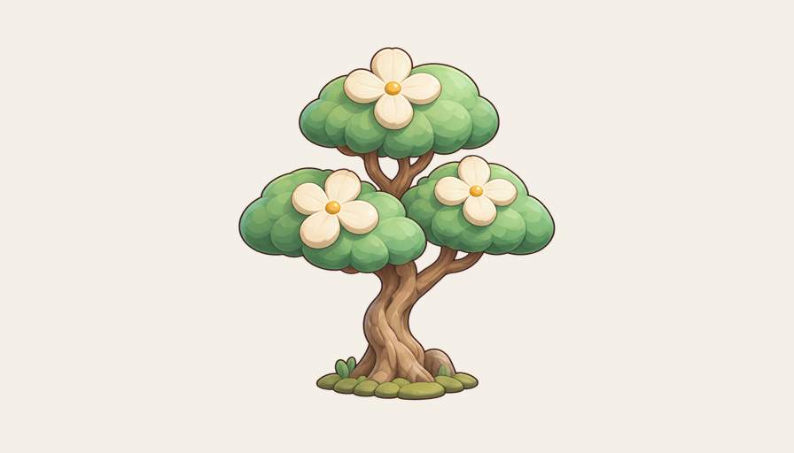

Five Day Two local motion studies
This is a local FIFO through the developed ComfyUI/Wan renderer. Jobs wait for existing work, then run one at a time on the developed8190 service. The puff calibrates execution before the remaining four. Check the timestamped queue snapshot for observed native submission IDs; a local queue entry alone is not a submitted ComfyUI prompt.
All outputs are LOCAL_MOTION_REFERENCE_ONLY. Nursery arms remain too lifelike per owner feedback. No art, movie or loop has owner approval or runtime/cinematic delivery acceptance.
Complete briefs, input/tool/model hashes and workflow graphs · Checks · Public revision receipt · Artwork report
Default scope: five applicable sources from the current eight-item replacement batch. Craft, Kitchen and Opera navigation badges remain static to preserve a quiet navigation hierarchy. No wider637-image redesign or animation commission is implied.
Each study uses the developed quantized profile (CLI preset name quick):896×512,41 native frames at24fps,24 steps, approximately1.708 seconds. Inputs preserve whole-canvas source art through uniform scaling and neutral padding. The model can still distort shapes; preset size is not a quality guarantee. Three prior nursery fresh still attempts and all original artwork remain preserved.
1. Boxing puff contact accent · D2A-0394
Draft source; owner approval pending.

Friendly, quick acknowledgment of a validated glove contact; never a hit or threat.
Motion: 0.00-0.25 seconds: hold the original friendly puff. 0.25-0.55: the existing puff lobes gently open by a very small amount. 0.55-1.20: they settle back together. 1.20-1.70: rest in the original silhouette. Keep the original detached painted droplets, their count and their relationship to the puff; do not add particles.
Anchors and identity: Puff center fixed; disconnected droplets retain identity; no new flashes, smoke, stars, text or camera motion.
Interaction: Existing specialist puff lasts0.52 seconds and draws130-220px; shared career puff begins68px and grows. This1.708-second study explores motion only, not runtime duration. Gameplay owns validated contact and rewards; animation never awards either.
Exit: One-shot contact study; rest at entry and exit. Loop approval is not claimed.
Exact prompt · Input plate
2. Nursery gentle catching gesture · D2A-0446
Owner feedback: still too lifelike. Style rejected; gesture study only.

Quiet reassurance: present an open, steady support for the separately drawn falling baby.
Motion: 0.00-0.35 seconds: still, open palms. 0.35-0.72: both illustrated palms lift slightly toward the empty central opening. 0.72-1.10: pause with broad open support. 1.10-1.43: settle gently to the initial pose. 1.43-1.70: remain still. Keep the simple painted fingers grouped and the same two arms; no realistic joint acting.
Anchors and identity: Sleeve ends and lower wrist support stay fixed. Central opening stays empty. No baby, face, torso, extra hand, skin texture, realistic lighting or invented prop.
Interaction: Current116px cradle draw and separate baby86px draw need contextual overlap review. A raised palm or clip end cannot catch a baby, save progress or grant a reward.
Exit: Isolated gesture study, no simulated baby contact and no runtime catch authority.
Exact prompt · Input plate
3. Mounted racer wheel rotation · D2A-0495
Draft source; owner approval pending.
A calm mechanical indication that the existing kart is moving.
Motion: 0.00-1.70 seconds: the existing painted wheel rotates slowly through one complete revolution about its fixed hub. Maintain a steady pace and finish at the original spoke phase. Rotate only the rim and spokes; keep any visible mounting or support fixed.
Anchors and identity: Hub, wheel size, location, silhouette, palette and mounting fixed. No new axle, chassis, steering wheel, road, tread details or camera movement.
Interaction: Kart/gameplay owns speed and travel. A motion reference does not move the kart or replace input. Review at actual36px draw size.
Exit: Requested single revolution; exact cycle/phase closure remains a visual review gate.
Exact prompt · Input plate
4. Bigleaf maple quiet breeze · D2A-0056
Draft source; owner approval pending.

A restrained living accent that preserves a readable species choice.
Motion: 0.00-0.25 seconds: still. 0.25-0.75: the illustrated upper leaf group sways slightly right in one light breeze. 0.75-1.30: ease back to the initial silhouette. 1.30-1.70: still. The two paired winged maple seeds remain attached and retain their count and design.
Anchors and identity: Trunk base and root contact fixed. Broad leaf grouping and species silhouette stable. No extra seeds, fruit, flowers, falling leaves or background.
Interaction: Current Tree Book page-zero distractor only. No new patient, story fact or educational identifier. Animation must not compete with the correct-choice cue.
Exit: Single breeze with rest at both ends; no continuous loop acceptance.
Exact prompt · Input plate
5. Pacific dogwood quiet breeze · D2A-0057
Draft source; owner approval pending.

A restrained living accent that preserves its flowering species identity.
Motion: 0.00-0.35 seconds: still. 0.35-0.85: the illustrated canopy moves slightly left in a soft breeze. 0.85-1.35: return gently to the original canopy shape. 1.35-1.70: still. Keep exactly the original three dogwood flowers and their centers; none opens, falls or changes identity.
Anchors and identity: Trunk base and root contact fixed. Exactly three flowers retained; no new petals, fruit, leaves, creatures or background.
Interaction: Current Tree Book page-zero distractor only. Keep flower readability at112px; do not turn this into a new patient action or progress event.
Exit: Single breeze with rest at both ends; no continuous loop acceptance.
Exact prompt · Input plate
Preserved first-attempt failure
ComfyUI accepted native puff prompt a67bc3ea-986a-4207-beb4-29c64b412345, then its native model loader crashed the service and the CLI lost its connection. No output was observed. Failure, original input/prompt and receipt evidence are preserved. The current revision uses distinct quantized job names on the developed8190 service. Puff is the first execution calibration; the other four wait for a successful matching receipt. Earlier unsubmitted8189 routing and its waiting snapshot are preserved. Queueing has no authority to restart or reconfigure the service.
Review after rendering
- Inspect all native frames for contours, finger/flower/seed counts, wheel hub, fixed supports, new objects, palette and flicker. Reject topology or identity drift.
- Compare entry/exit pose and intended holds; assess loop phase only where requested. Never hide missing motion with interpolation or duplicated frames.
- Review at each actual draw scale and in context. Nursery needs a simpler approved still and separate baby contact review; this isolated gesture supplies neither.
- Keep native WebM, whole-canvas MP4, full CLI receipt and hashes. Machine PASS means execution only. Local outputs are staging until reviewed and separately published.
The hidden worker writes live status and per-job logs under ignored build/day2_local_motion_active_20260930. It never restarts the service, installs models, submits competing prompts, grades results, changes the game or grants rewards. A failed render stops the batch for review; prior submissions are not automatically repeated.